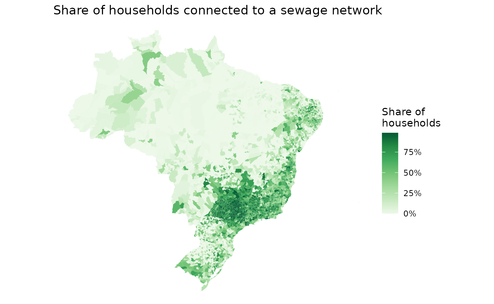

censobr is an R package to download data from Brazil’s Population Census. The package is built on top of the Arrow platform, which allows users to work with larger-than-memory census data using {dplyr} familiar functions.
obs.: The package is still under development. At the moment, censobr only includes microdata from the 2000 and 2010 censuses, but it is being expanded to cover more years and data sets.
Installation
# install from CRAN
install.packages("censobr")
# or use the development version with latest features
utils::remove.packages('censobr')
remotes::install_github("ipeaGIT/censobr", ref="dev")
library(censobr)Basic usage
The package currently includes 6 main functions to download census data:
read_population()read_households()read_mortality()read_families()read_emigration()read_tracts()
censobr also includes a few support functions to help users navigate the documentation Brazilian censuses, providing convenient information on data variables and methodology.:
Finally, the package includes a function to help users to manage the data chached locally.
The syntax of all censobr functions to read data operate on the same logic so it becomes intuitive to download any data set using a single line of code. Like this:
read_households(
year, # year of reference
columns, # select columns to read
add_labels, # add labels to categorical variables
as_data_frame, # return an Arrow DataSet or a data.frame
showProgress, # show download progress bar
cache # cache data for faster access later
)Note: all data sets in
censobr are enriched with geography columns following
the name standards of the {geobr} package to help
data manipulation and integration with spatial data from {geobr}. The
added columns are:
c(‘code_muni’, ‘code_state’, ‘abbrev_state’, ‘name_state’, ‘code_region’, ‘name_region’, ‘code_weighting’).
Data Cache:
The first time the user runs a function, censobr will download the file and store it locally. This way, the data only needs to be downloaded once. More info in the Data cache section below.
Larger-than-memory Data
Data of Brazilian censuses are often too big to load in users’ RAM
memory. To avoid this problem, censobr will by default
return an Arrow
table, which can be analyzed like a regular data.frame
using the dplyr package without loading the full data to
memory.
Let’s see how censobr works in a couple examples:
Reproducible examples
First, let’s load the libraries we’ll be using in this vignette.
Using Population data:
In this example we’ll be calculating the proportion of people with
higher education in different racial groups in the state of Rio de
Janeiro. First, we need to use the read_population()
function to download the population data set.
Since we don’t need to load to memory all columns from the data, we
can pass a vector with the names of the columns we’re going to use. This
might be necessary in more constrained computing environments. Note that
by setting add_labels = 'pt', the function returns labeled
values for categorical variables.
pop <- read_population(year = 2010,
columns = c('abbrev_state', 'V0606', 'V0010', 'V6400'),
add_labels = 'pt',
showProgress = FALSE)
#> Reading data cached locally.
class(pop)
#> [1] "arrow_dplyr_query"By default, the output of the function is an
"arrow_dplyr_query". This is makes it possible for you to
work with the census data in a super fast and efficient way, even though
the data set might be to big for your computer memory. By setting the
parameter as_data_frame = TRUE, the read functions load the
entire output to memory as a data.frame. Warning:
This can cause the R session to crash in computationally constrained
environments.
The output of the read functions in censobr can be
analyzed like a regular data.frame using the
dplyr package. For example, one can have a quick peak
into the data set with glimpse()
dplyr::glimpse(pop)
#> FileSystemDataset with 1 Parquet file (query)
#> 20,635,472 rows x 4 columns
#> $ abbrev_state <string> "RO", "RO", "RO", "RO", "RO", "RO", "RO", "RO", "RO", "R…
#> $ V0606 <string> "Parda", "Parda", "Branca", "Branca", "Parda", "Parda", …
#> $ V0010 <double> 8.705865, 8.705865, 9.818689, 9.495608, 9.495608, 9.4956…
#> $ V6400 <string> "Sem instrução e fundamental incompleto", "Sem instrução…
#> Call `print()` for query detailsIn the example below, we use the dplyr syntax to (a)
filter observations for the state of Rio de Janeiro, (b) group
observations by racial group, (c) summarize the data calculating the
proportion of individuals with higher education. Note that we need do
add a collect() call at the end of our query.
df <- pop |>
filter(abbrev_state == "RJ") |> # (a)
compute() |>
group_by(V0606) |> # (b)
summarize(higher_edu = sum(V0010[which(V6400=="Superior completo")]) / sum(V0010), # (c)
pop = sum(V0010) ) |>
collect()
head(df)
#> # A tibble: 6 × 3
#> V0606 higher_edu pop
#> <chr> <dbl> <dbl>
#> 1 Amarela 0.0782 122552.
#> 2 Branca 0.151 7579023.
#> 3 Ignorado 0 3397.
#> 4 Indígena 0.109 15258.
#> 5 Parda 0.0443 6332408.
#> 6 Preta 0.0405 1937291.Now we only need to plot the results.
df <- subset(df, V0606 != 'Ignorado')
ggplot() +
geom_col(data = df, aes(x=V0606, y=higher_edu), fill = '#5c997e') +
scale_y_continuous(name = 'Proportion with higher education',
labels = scales::percent) +
labs(x = 'Cor/raça') +
theme_classic()
Using household data:
Sewage coverage:
In this example, we are going to map the proportion of households
connected to a sewage network in Brazilian municipalities First, we can
easily download the households data set with the
read_households() function.
hs <- read_households(year = 2010,
showProgress = FALSE)
#> Reading data cached locally.Now we’re going to (a) group observations by municipality, (b) get the number of households connected to a sewage network, (c) calculate the proportion of households connected, and (d) collect the results.
esg <- hs |>
compute() |>
group_by(code_muni) |> # (a)
summarize(rede = sum(V0010[which(V0207=='1')]), # (b)
total = sum(V0010)) |> # (b)
mutate(cobertura = rede / total) |> # (c)
collect() # (d)
head(esg)
#> # A tibble: 6 × 4
#> code_muni rede total cobertura
#> <chr> <dbl> <dbl> <dbl>
#> 1 1100015 0 7443. 0
#> 2 1100023 182. 27654. 0.00660
#> 3 1100031 0 1979. 0
#> 4 1100049 10019. 24413. 0.410
#> 5 1100056 5.81 5399 0.00108
#> 6 1100064 28.9 6013. 0.00480In order to create a map with these values, we are going to use the {geobr} package to download the geometries of Brazilian municipalities.
library(geobr)
muni_sf <- geobr::read_municipality(year = 2010,
showProgress = FALSE)
#> Using year 2010
head(muni_sf)
#> Simple feature collection with 6 features and 4 fields
#> Geometry type: MULTIPOLYGON
#> Dimension: XY
#> Bounding box: xmin: -63.61822 ymin: -13.6937 xmax: -60.33317 ymax: -9.66916
#> Geodetic CRS: SIRGAS 2000
#> code_muni name_muni code_state abbrev_state
#> 1 1100015 Alta Floresta D'oeste 11 RO
#> 2 1100023 Ariquemes 11 RO
#> 3 1100031 Cabixi 11 RO
#> 4 1100049 Cacoal 11 RO
#> 5 1100056 Cerejeiras 11 RO
#> 6 1100064 Colorado Do Oeste 11 RO
#> geom
#> 1 MULTIPOLYGON (((-62.2462 -1...
#> 2 MULTIPOLYGON (((-63.13712 -...
#> 3 MULTIPOLYGON (((-60.52408 -...
#> 4 MULTIPOLYGON (((-61.42679 -...
#> 5 MULTIPOLYGON (((-61.41347 -...
#> 6 MULTIPOLYGON (((-60.66352 -...Now we only need to merge the spatial data with our estimates and map the results.
muni_sf$code_muni <- as.character(muni_sf$code_muni)
esg_sf <- left_join(muni_sf, esg, by = 'code_muni')
ggplot() +
geom_sf(data = esg_sf, aes(fill = cobertura), color=NA) +
labs(title = "Share of households connected to a sewage network") +
scale_fill_distiller(palette = "Greens", direction = 1,
name='Share of\nhouseholds',
labels = scales::percent) +
theme_void()
Spatial distribution of rents:
In this final example, we’re going to visualize how the amount of money people spend on rent varies spatially across the metropolitan area of São Paulo.
First, let’s download the municipalities of the metro area of São Paulo.
metro_muni <- geobr::read_metro_area(year = 2010, showProgress = FALSE) |>
subset(name_metro == "RM São Paulo")
#> Using year 2010We also need the polygons of the weighting areas (áreas de ponderação). With the code below, we download all weighting areas in the state of São Paulo, and then keep only the ones in the metropolitan region of São Paulo.
wt_areas <- geobr::read_weighting_area(code_weighting = "SP", showProgress = FALSE,
year = 2010)
#> Using year 2010
wt_areas <- subset(wt_areas, code_muni %in% metro_muni$code_muni)
head(wt_areas)
#> Simple feature collection with 6 features and 7 fields
#> Geometry type: MULTIPOLYGON
#> Dimension: XY
#> Bounding box: xmin: -46.73454 ymin: -23.64487 xmax: -46.64756 ymax: -23.53528
#> Geodetic CRS: SIRGAS 2000
#> code_weighting code_muni name_muni code_state abbrev_state code_region
#> 5 3550308005100 3550308 São Paulo 35 SP 3
#> 6 3550308005102 3550308 São Paulo 35 SP 3
#> 8 3550308005101 3550308 São Paulo 35 SP 3
#> 10 3550308005104 3550308 São Paulo 35 SP 3
#> 12 3550308005103 3550308 São Paulo 35 SP 3
#> 14 3550308005106 3550308 São Paulo 35 SP 3
#> name_region geom
#> 5 Sudeste MULTIPOLYGON (((-46.67201 -...
#> 6 Sudeste MULTIPOLYGON (((-46.67663 -...
#> 8 Sudeste MULTIPOLYGON (((-46.67257 -...
#> 10 Sudeste MULTIPOLYGON (((-46.70138 -...
#> 12 Sudeste MULTIPOLYGON (((-46.69581 -...
#> 14 Sudeste MULTIPOLYGON (((-46.73454 -...Now we need to calculate the average rent spent in each weighting area. Using the national household data set, we’re going to (a) filter only observations in our municipalities of interest, (b) group observations by weighting area, (c) calculate the average rent, and (d) collect the results.
rent <- hs |>
filter(code_muni %in% metro_muni$code_muni) |> # (a)
compute() |>
group_by(code_weighting) |> # (b)
summarize(avgrent=weighted.mean(x=V2011, w=V0010, na.rm=TRUE)) |> # (c)
collect() # (d)
head(rent)
#> # A tibble: 6 × 2
#> code_weighting avgrent
#> <chr> <dbl>
#> 1 3503901003001 355.
#> 2 3503901003002 627.
#> 3 3503901003003 358.
#> 4 3505708005001 577.
#> 5 3505708005002 397.
#> 6 3505708005003 327.Finally, we can merge the spatial data with our rent estimates and map the results.
rent_sf <- left_join(wt_areas, rent, by = 'code_weighting')
ggplot() +
geom_sf(data = rent_sf, aes(fill = avgrent), color=NA) +
geom_sf(data = metro_muni, color='gray', fill=NA) +
scale_fill_distiller(palette = "Greens", direction = 1,
name='Avgerage\nRent in R$') +
theme_void()
Data cache
The first time the user runs a function, censobr
will download the file and store it locally. This way, the data only
needs to be downloaded once. When the cache parameter is
set to TRUE (Default), the function will read the cached
data, which is much faster.
Users can manage the cached data sets using the
censobr_cache() function. For example, users can:
List cached files:
censobr_cache(list_files = TRUE)
#> Files currently chached:
#> /home/runner/.cache/R/censobr/data_release_v0.2.0/1980_dictionary_microdata_households.html
#> /home/runner/.cache/R/censobr/data_release_v0.2.0/2000_families_v0.2.0.parquet
#> /home/runner/.cache/R/censobr/data_release_v0.2.0/2010_deaths_v0.2.0.parquet
#> /home/runner/.cache/R/censobr/data_release_v0.2.0/2010_dictionary_microdata_population.html
#> /home/runner/.cache/R/censobr/data_release_v0.2.0/2010_dictionary_tracts.pdf
#> /home/runner/.cache/R/censobr/data_release_v0.2.0/2010_emigration_v0.2.0.parquet
#> /home/runner/.cache/R/censobr/data_release_v0.2.0/2010_households_v0.2.0.parquet
#> /home/runner/.cache/R/censobr/data_release_v0.2.0/2010_interview_manual.pdf
#> /home/runner/.cache/R/censobr/data_release_v0.2.0/2010_population_v0.2.0.parquet
#> /home/runner/.cache/R/censobr/data_release_v0.2.0/2010_questionnaire_sample.pdf
#> /home/runner/.cache/R/censobr/data_release_v0.2.0/2010_tracts_Basico_v0.2.0.parquet
#> /home/runner/.cache/R/censobr/data_release_v0.2.0/2010_tracts_PessoaRenda_v0.2.0.parquetDelete a particular file:
censobr_cache(delete_file = "2010_emigration")
#> The file '2010_emigration' has been removed.
#> Files currently chached:
#> /home/runner/.cache/R/censobr/data_release_v0.2.0/1980_dictionary_microdata_households.html
#> /home/runner/.cache/R/censobr/data_release_v0.2.0/2000_families_v0.2.0.parquet
#> /home/runner/.cache/R/censobr/data_release_v0.2.0/2010_deaths_v0.2.0.parquet
#> /home/runner/.cache/R/censobr/data_release_v0.2.0/2010_dictionary_microdata_population.html
#> /home/runner/.cache/R/censobr/data_release_v0.2.0/2010_dictionary_tracts.pdf
#> /home/runner/.cache/R/censobr/data_release_v0.2.0/2010_households_v0.2.0.parquet
#> /home/runner/.cache/R/censobr/data_release_v0.2.0/2010_interview_manual.pdf
#> /home/runner/.cache/R/censobr/data_release_v0.2.0/2010_population_v0.2.0.parquet
#> /home/runner/.cache/R/censobr/data_release_v0.2.0/2010_questionnaire_sample.pdf
#> /home/runner/.cache/R/censobr/data_release_v0.2.0/2010_tracts_Basico_v0.2.0.parquet
#> /home/runner/.cache/R/censobr/data_release_v0.2.0/2010_tracts_PessoaRenda_v0.2.0.parquetDelete all files:
censobr_cache(delete_file = "all")
#> All files have been removed.
#> Files currently chached:
#> By default, censobr files are saved in the ‘User’
directory. However, users can run the function
set_censobr_cache_dir() to set custom cache directory.
tempf <- tempdir()
set_censobr_cache_dir(path = tempf)